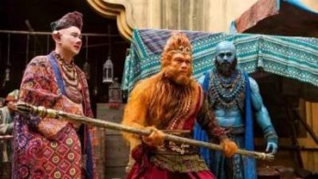

作为全球票房的主要来源，好莱坞不得不重视中国这块重要市场，近几年好莱坞商业片中偶尔出现产品置入外，中美合资拍摄的情形也越来越常见，不过中国人爱看的电影类型，和北美及世界各地相比毕竟还是有落差——近期 The Hollywood Reporter 整理出 2016 上半年在中国票房表现最佳的几部电影，其中几部就真的颇让人意外的啊??。
＊以下顺序照票房排列，文内票房皆以美金为单位。
十、《X 战警：天启》
全球票房：5.2 亿／中国票房：1.2 亿
《X战警》前传三部曲的最终章——《X战警：天启》北美票房首周末约 6500 万美金，票房虽然还算亮眼，却仍不如预期，最后北美总收入为 1.5 亿美金，而全球票房主要贡献则是来自中国（1.2 亿），此片虽然评价两极，但票房在中国却胜过普遍更获得喜爱的前作《X战警：逆转未来》（1.1 亿）。
九、《星球大战：原力觉醒》
全球票房：20 亿／中国票房：1.2 亿
去年刷新票房纪录，成为影史票房第三高的《星际大战：原力觉醒》，光是北美就有近 10 亿的票房收入，让人对星战的威力大感惊艳，不过也许是因为美国以外的观众对于星战感情没有那么深，此片的全球票房算是不如预期（11亿），今年 1 月终于在中国上映后，票房表现也只居于这份榜单的第九名。
八、《奇幻森林》
全球票房：9.3 亿／中国票房：1.5 亿
虽然全片只有饰演毛克利的小男孩是真人，集合大咖为动物献声依然是一大噱头，今年不论在评价或票房上都有绝佳表现的《奇幻森林》，无疑是近年迪士尼动画改编中最成功的一部，全球票房只差一点就能冲到 2010 年《爱丽丝梦游仙境》的票房纪录（10 亿），而在中国高达 1.5 亿的收入也算在预期之内了。
七、《功夫熊猫 3》
全球票房：5.1 亿／中国票房：1.5 亿
由梦工厂推出的《功夫熊猫》系列以熊猫为主题、时空背景呈现出浓浓老上海风，本次更与中国合资制作，中文版也配合客制动画，使角色口型符合中文台词，瞄准中国市场的野心十分明显。而票房也证明片商的用心相当划得来，本片于中国获得 1.5 亿美金票房，以儿童取向电影来说表现非常亮眼。
六、《澳门风云3》
全球票房：2.1 亿／中国票房：1.7 亿
集合周润发、刘德华、张学友、余文乐、张嘉玲超强阵容的《澳门风云3》原预期将会在香港获得高票房，却因为导演王晶的失当发言而导致此片在香港被许多人拒看，唯有上映第一天票房表现佳，之后全靠中国票房撑起，虽然与《美人鱼》、《西游记之孙悟空三打白骨精》档期强撞，最后这部电影依然在中国有高达 1.72 亿的收入，四王一后的魅力不容小觑。
五、《西游记之孙悟空三打白骨精》

全球票房：1.9 亿／中国票房：1.8 亿
《西游记之孙悟空三打白骨精》于中国大年初一上映，大咖主演、主打绚丽 3D 特效，走注定会大受欢迎的贺岁片路线，更有影评人形容此片的魔幻风视觉媲美《霍比特人》。这部电影在美国、英国也有小规模上映，其中美国上映的 38 间戏院也有 70 万的票房，算是表现还不错。
四、《美国队长 3：英雄内战》
全球票房：11 亿／中国票房：1.9 亿
今年目前为止票房和评价综合表现最佳的《美国队长 3：英雄内战》在中国获得 1.9 亿票房，虽然以全球来看并没有特别突出，但已预见将来超级英雄电影也势必向中国靠拢的导演罗素兄弟，前阵子也传出将在北京创设工作室，制作“属于中国的超级英雄片”，更有人将此计画戏称为是要拍“中国队长”，不知道如果真的要拍，非中国的观众买不买单？
三、《魔兽》
全球票房：4.3 亿／中国票房：2.2 亿
与《爱丽丝梦游仙境2：镜中奇遇记》类似，《魔兽》虽然在北美票房失利，但在中国却有高达2.2亿的好成绩，占全球票房的一半，其背后除了中国玩家对于经典游戏《魔兽》很有感情外，中国的出资想必也占一大主因——负责本片制作的传奇影业今年正式宣布由中国万达收购，未来将成为好莱坞与中国市场交流的重要纽带。
二、《疯狂动物城》

全球票房：10亿／中国票房：2.3 亿
上映后赢得空前好评、被视为接下来奥斯卡最佳动画种子选手的《疯狂动物城》，是迪士尼有史以来票房第二名（仅次于《冰雪奇缘》），而这类型充满鲜艳色彩的动画片似乎今年在中国特别受欢迎，此片在中国票房有 2.3 亿的好成绩，直逼北美的 3.4 亿。
一、《美人鱼》
全球票房：5.5亿／中国票房：5.2 亿
由周星驰自编自导的《美人鱼》与《西游记之孙悟空三打白骨精》同样在大年初一上映，获得相当惊人的话题热度，作为贺岁片其讨论声浪延烧至今仍未消退，而票房在中国居于今年之冠外，其在美国上映后竟然也获得出乎意料的回响，起初仅在 35 间戏院小规模上映，首周末即获得 101 万的收入，随即加开至 77 间戏院，最后取得 320 万的票房。
来源：娱乐扒卦阵